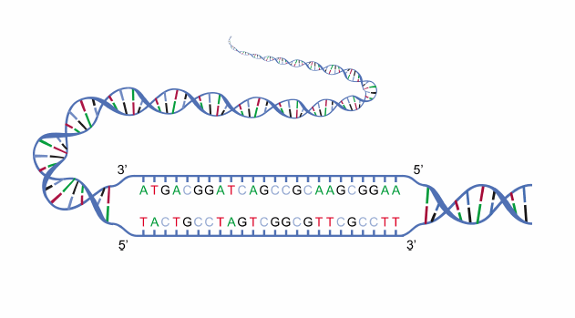

Brief overview of the Artificial Intelligence in DNA Comprehension
2025-01-10
Introduction: AI x DNA
Artificial intelligence is used in many different fields and is now being applied to the complex domain of DNA comprehension. By leveraging advanced machine learning models, researchers can analyze vast volumes of genomic data with unparalleled precision and speed. AI makes it possible to identify patterns and relationships in DNA sequences that were previously inaccessible, driving significant advancements in understanding gene expression, mutations, and regulatory elements. These new methods pave the way for innovations that have the potential to transform biological research and healthcare. Below is a brief (non-exhaustive) overview of these advancements.
General context
Large Language Models (LLM) are deep learning models trained to process and understand vast amounts of sequential data, perfect for the natural language processing (NLP) because it can « guess » the interaction bewteen words and guess the context and the meaning of a sentence or a groupe of sentences.
Application to DNA context : DNA sequences can be treated as a « language » where the four nucleotides (A, T, C, G) form the « alphabet, » enabling LLMs to analyze complex patterns and structures in genomic data.
DNA strands represenation
General context
Key Applications
Sequence Analysis: Predict nucleotide sequences and structural motifs.
Gene Function Prediction: Identify promoters, enhancers, and other regulatory elements.
Variant Impact Assessment: Analyze the effects of genetic mutations on gene expression and fitness.
Synthetic Biology: Design novel genetic elements and entire genomes.
Key Concepts in NLP
Token
- Definition: Transforming a sequence into a list of smaller components called “tokens.”
- Example:
- For text: “The King eats an apple” -> “The”, “King”, “eats”, “an”, “apple”
- For DNA: “ATCGTAGC” -> “ATC”, “GTA”, “GC”
- Example:

Add schema
Key Concepts in NLP
Embedding
Definition
Each token is transformed into a vector that captures its relationships with others. To do this, you define a dictionary which is a list of all the tokens/words in your corpus.
Training
Requires pre-training on data to infer patterns and relationships.
Add schema
More information: Medium article on tokens, vectors, and embeddings
Key Concepts in NLP
Transformers
- Definition: A neural network architecture designed for processing sequential data by focusing on relationships between elements regardless of their distance in the sequence.
- Key Mechanism: Uses self-attention to weigh the importance of different elements in the sequence.
- Advantages: Captures long-range dependencies and parallelizes processing for efficiency.
- Application in DNA: Identifies long-distance interactions in genomic sequences, such as enhancer-promoter connections.
The king eat an apple
Decoder
Encoder
Le roi mange une banane
More explanation : https://medium.com/@ahmadsabry678/a-perfect-guide-to-understand-encoder-decoders-in-depth-with-visuals-30805c23659b
Key Concepts in NLP
Masked Language Modeling (MLM)
Definition: A training objective where some tokens in the sequence are masked and the model learns to predict them based on context.
Importance: Helps the model understand relationships and dependencies between elements in a sequence.
Application in DNA: Enables models to infer missing or obscured nucleotide sequences and learn patterns in genomic data.
Key Concepts in NLP
Fine-Tuning
- Definition: Adapting a pre-trained model to a specific task by training it further on a smaller, task-specific dataset.
- Process: Retains the general knowledge learned during pre-training while tailoring the model to specialized data.
- Advantages: Reduces computational costs and training time while improving task-specific performance.
- Application in DNA: Enables models like the Nucleotide Transformer to specialize in tasks such as variant effect prediction or functional annotation.
Nucleotide Transformer
Various Types of Models
Multitask Nature:
AI models for DNA are designed to handle a wide range of genomic tasks, including:
- Sequence Prediction: Predicting nucleotide sequences (e.g., GROVER).
- Gene Expression: Modeling long-range interactions (e.g., Nucleotide Transformer).
- Mutation Analysis: Predicting the fitness impact of mutations (e.g., Evo).
- Functional Annotation: Identifying promoters, enhancers, or protein-binding sites.
Multiparadigm Approach
These models integrate various paradigms to maximize performance:
- Foundation Models: Pre-trained on massive datasets and fine-tuned for specific tasks (e.g., Nucleotide Transformer).
- Generative Models: Create novel genomic or functional elements (e.g., Evo for synthetic CRISPR systems).
- Supervised Models: Use labeled data for targeted functional predictions (e.g., LucaProt for protein-DNA interactions).
Training Data:
The datasets used vary significantly depending on the application:
- Human genome or multi-species datasets (eukaryotes or prokaryotes).
- Other specialized datasets as needed.
Grover
Focus: Understanding DNA grammar and sequence structure.
Application: Predicting genome elements like promoters and enhancers.
Data: Exclusively human genome.
Details:
- Training Details:
- Data Used: Exclusively trained on the human genome sequence.
- Data Used: Exclusively trained on the human genome sequence.
- Model Architecture:
- Byte Pair Encoding (BPE): Established a vocabulary tailored for genomic sequences.
- Model Size: Not disclosed.
- Byte Pair Encoding (BPE): Established a vocabulary tailored for genomic sequences.
- Approach:
- Next-k-mer Prediction: Custom task to select the optimal vocabulary with BPE.
- Next-k-mer Prediction: Custom task to select the optimal vocabulary with BPE.
- Validation & Testing:
- Genome Element Identification: Identifying promoters, enhancers, and other genomic elements.
- Protein–DNA Binding Prediction: Assessing binding affinities between proteins and DNA sequences.
- Genome Element Identification: Identifying promoters, enhancers, and other genomic elements.
Performance: - Accuracy: Achieved 2% accuracy in predicting the next 6-mers in DNA sequences.
- Comparison: Outperformed other models in genome biology tasks.
- Context Learning: Modeled sequence context and structural nuances within the human genome.
Nucleotide Transformer
Focus: Long-range context for gene expression and variant predictions.
Application: Multi-species genomic tasks and molecular phenotype prediction.
Data: Genomes from humans and 850 species.
Details:
- Training Details:
- GPUs Used: 128 GPUs across 16 compute nodes for 28 days.
- Data Used:
- 3,202 human genomes (1000 Genomes Project).
- 850 genomes from diverse species (model & non-model organisms).
- 3,202 human genomes (1000 Genomes Project).
- GPUs Used: 128 GPUs across 16 compute nodes for 28 days.
- Pre-training: Combined human and species-diverse genome datasets.
- Fine-tuning: Specific tasks and datasets, including the 1000 Genomes Project.
- Model Architecture:
- Nucleotide Transformer v2: 250M parameters.
- Smaller Model: 50M parameters for faster iterations.
- Nucleotide Transformer v2: 250M parameters.
- Approach:
- Treats nucleotide sequences as sentences and 6-mers as words.
- Processes sequences with a 12 kb context length.
- Treats nucleotide sequences as sentences and 6-mers as words.
- Validation & Testing:
- Molecular phenotype prediction: Tested on 18 tasks.
- Genetic variant prioritization: Functional variant ranking.
- Attention analysis: Verified focus on key genomic elements.
- Molecular phenotype prediction: Tested on 18 tasks.
- Outcomes:
- Accurate predictions, even with limited data.
- Outperformed specialized methods on multiple tasks.
- Accurate predictions, even with limited data.
Evo – A Genomic Foundation Model
Focus: Multimodal genome-scale modeling (DNA, RNA, and proteins).
Application: Zero-shot predictions, mutation impact, and synthetic genome generation.
Data: 2.7M prokaryotic and phage genomes.
Details:
- Training Details:
- Data Used: 2.7 million raw prokaryotic and phage genome sequences.
- Data Used: 2.7 million raw prokaryotic and phage genome sequences.
- Model Architecture:
- Size: 7 billion parameters.
- Context Length: Processes sequences up to 131 kilobases (kb) at single-nucleotide, byte resolution.
- Size: 7 billion parameters.
- Validation & Testing:
- Zero-shot function prediction: Assessed across DNA, RNA, and proteins.
- Functional system generation: Created synthetic CRISPR-Cas complexes and transposable elements.
- Mutation impact analysis: Predicted effects of small mutations on organismal fitness.
- Long-sequence generation: Produced coding-rich sequences up to 650 kb in length.
- Zero-shot function prediction: Assessed across DNA, RNA, and proteins.
- Performance:
- Zero-shot predictions: Competitive with, or outperformed, leading domain-specific language models.
- Functional system generation: Successfully generated novel protein-RNA and protein-DNA systems.
- Mutation impact: Accurately predicted fitness effects at nucleotide resolution.
- Long-sequence generation: Created sequences with plausible genomic architecture.
- Zero-shot predictions: Competitive with, or outperformed, leading domain-specific language models.
- Training Methodology:
- Foundation model training: Leveraged large-scale genomic data to learn representations across molecular modalities.
- Multiscale modeling: Enabled tasks from molecular to genome scale, encompassing DNA, RNA, and protein sequences.
- Generative design: Facilitated the creation of novel genetic elements and systems.
- Foundation model training: Leveraged large-scale genomic data to learn representations across molecular modalities.
LucaProt
Focus: Protein function prediction using sequence and structure integration.
Application: Functional annotation and discovery of viral proteins.
Data: Protein sequences and structural information.
Details:
- Training Details:
- Data Used:
- Protein amino acid sequences: Comprehensive datasets encompassing diverse proteins.
- Structural information: Incorporation of protein structural data to enhance prediction accuracy.
- Protein amino acid sequences: Comprehensive datasets encompassing diverse proteins.
- Data Used:
- Model Architecture:
- Components:
- Input Module: Processes raw protein sequences and structural information.
- Tokenizer + Encoder + Pooling Layer.
- Output Module: Performs classification to predict protein functions.
- Input Module: Processes raw protein sequences and structural information.
- Components:
- Validation & Testing:
- Viral RdRP Identification: Applied to detect RNA-dependent RNA polymerase sequences in viruses.
- General Protein Function Annotation: Evaluated on multi-label classification tasks for diverse protein functions.
- Viral RdRP Identification: Applied to detect RNA-dependent RNA polymerase sequences in viruses.
- Performance:
- Accuracy: Demonstrated high accuracy in predicting protein functions across various datasets.
- Robustness: Maintained performance across different protein families and functional categories.
- Accuracy: Demonstrated high accuracy in predicting protein functions across various datasets.
- Training Methodology:
- Sequence and structure integration: Combined amino acid sequences with structural data to enhance predictive capabilities.
- Supervised learning: Trained on labeled datasets with known protein functions to learn accurate mappings.
- Model optimization: Employed advanced techniques to fine-tune parameters for improved performance.
- Sequence and structure integration: Combined amino acid sequences with structural data to enhance predictive capabilities.
https://github.com/Romumrn/slides_AI_DNA